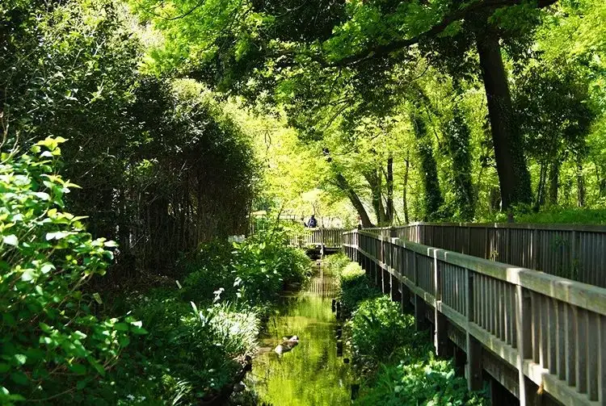

Kiyose, Tokyo: things to do, food and stays
Kiyose · Tokyo
Kiyose
Highlighted on the Tokyo map.

Sights
Dining
Chuka Sobaya Wabon
中華そばや 和凡

Noodle restaurant in Kiyose, Tokyo.
Rebanira Teishoku kei Raku
レバニラ定食 kei楽

Chinese or Asian restaurant in Kiyose, Tokyo.
Kitchen Suzuki
キッチンスズキ

Meat restaurant in Kiyose, Tokyo.
Miyuki Shokudo
みゆき食堂

Izakaya or bar in Kiyose, Tokyo.
AME-TSUCHI
天地

Noodle restaurant in Kiyose, Tokyo.
Tonshinju Kiyose ten
同心居 清瀬店

Chinese or Asian restaurant in Kiyose, Tokyo.
Menya Harukaze
麺屋 春風

Noodle restaurant in Kiyose, Tokyo.
marususobaudontachiguisenta
まるすそば・うどん立ち食いセンター

Noodle restaurant in Kiyose, Tokyo.
Saitama Tanmen Yamada Taro Kiyose kitaguchi ten
埼玉タンメン山田太郎 清瀬北口店

Noodle restaurant in Kiyose, Tokyo.
NOI

Sweets and bakery shop in Kiyose, Tokyo.
Sosuke
そうすけ

Noodle restaurant in Kiyose, Tokyo.
Bon Bon Gateaux
ボンボンガトー

Sweets and bakery shop in Kiyose, Tokyo.
Takakuramachi Coffee Kiyose ten
高倉町珈琲 清瀬店

Cafe in Kiyose, Tokyo.
Udontei Nabekichi
うどん亭 なべきち

Noodle restaurant in Kiyose, Tokyo.
Teuchi Sobaya Sawami
手打ち蕎麦や さ和味

Noodle restaurant in Kiyose, Tokyo.
Sayama Soba Kiyose ten
狭山そば 清瀬店

Noodle restaurant in Kiyose, Tokyo.
Pan no Mise Annue Anne
パンのみせ アンヌアンネ

Sweets and bakery shop in Kiyose, Tokyo.
Ramen Ezo
らーめん 蝦夷

Noodle restaurant in Kiyose, Tokyo.
Arbre
カジュアルフレンチレストラン アルブル

European restaurant in Kiyose, Tokyo.
Nouveau Marche
ヌーボーマルシェ

European restaurant in Kiyose, Tokyo.
Ju Wari Soba Ikezoe
十割蕎麦 池添

Noodle restaurant in Kiyose, Tokyo.
Yakiniku Horumon Gocchi
焼肉ホルモン ごっち

Meat restaurant in Kiyose, Tokyo.
Yume Kukan
夢空間

Restaurant in Kiyose, Tokyo.
Sosaku Wagashi Honoka
創作和菓子 ほのか

Sweets and bakery shop in Kiyose, Tokyo.
Matsuan
松庵

Noodle restaurant in Kiyose, Tokyo.
muroi
中華料理 むろい

Chinese or Asian restaurant in Kiyose, Tokyo.
Sushi Kappou Kinpei Reservation
寿司割烹 きんぺい

Seafood restaurant in Kiyose, Tokyo.
calm

Cafe in Kiyose, Tokyo.
Inaka Udon Shinoshin
田舎うどん篠新

Noodle restaurant in Kiyose, Tokyo.
Panas

Chinese or Asian restaurant in Kiyose, Tokyo.
Ikabaru X Niku Baru Haru
イカバル×肉バル Haru

Meat restaurant in Kiyose, Tokyo.
Kissa Angel
喫茶 エンゼル

Cafe in Kiyose, Tokyo.
Yakitori Osada Kiyose ten
やき鶏 おさ田 清瀬店

Meat restaurant in Kiyose, Tokyo.
MOM'S TOUCH Akitsu ekimae ten
MOM'S TOUCH 秋津駅前店

Izakaya or bar in Kiyose, Tokyo.
Kiyo Zushi
清寿司

Seafood restaurant in Kiyose, Tokyo.
Shokudo Kaachan Chi
食堂 かあちゃんち

Japanese restaurant in Kiyose, Tokyo.